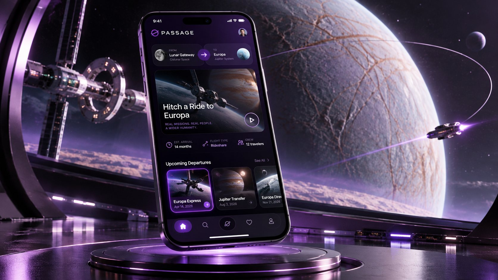
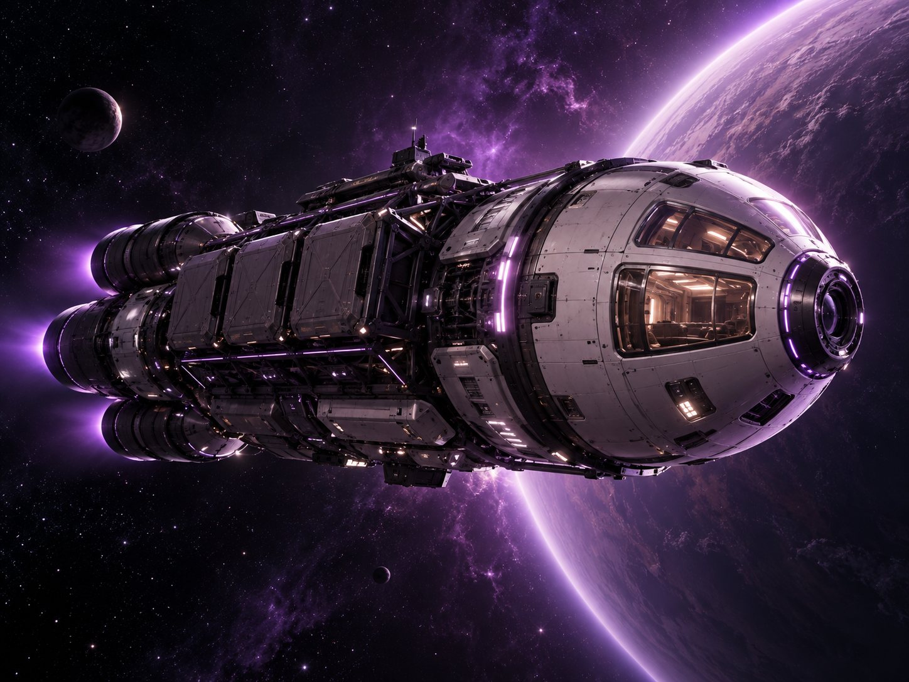
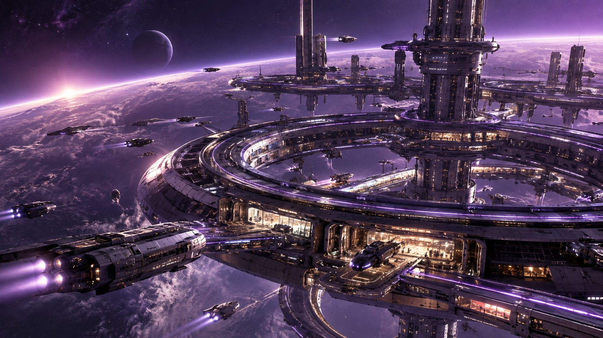
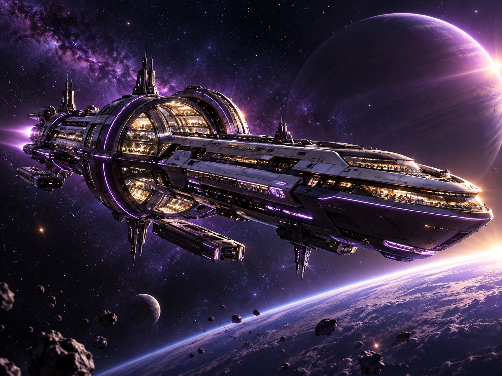
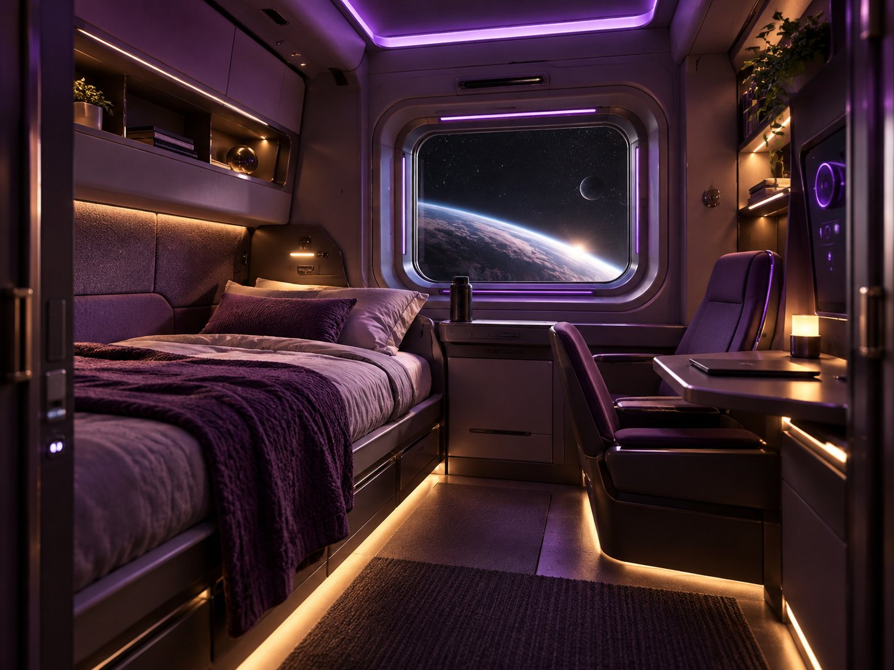
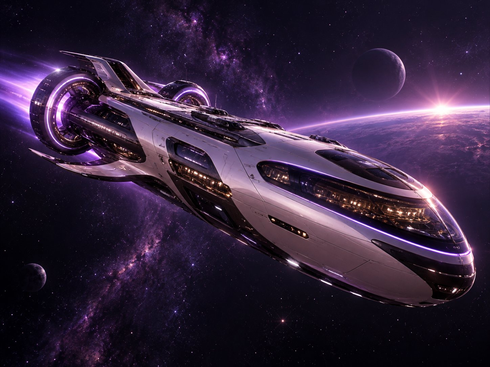
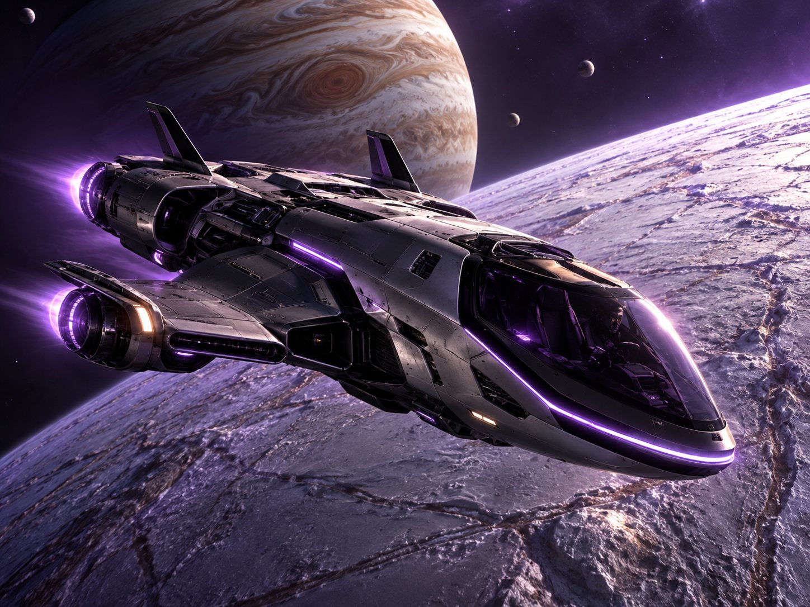
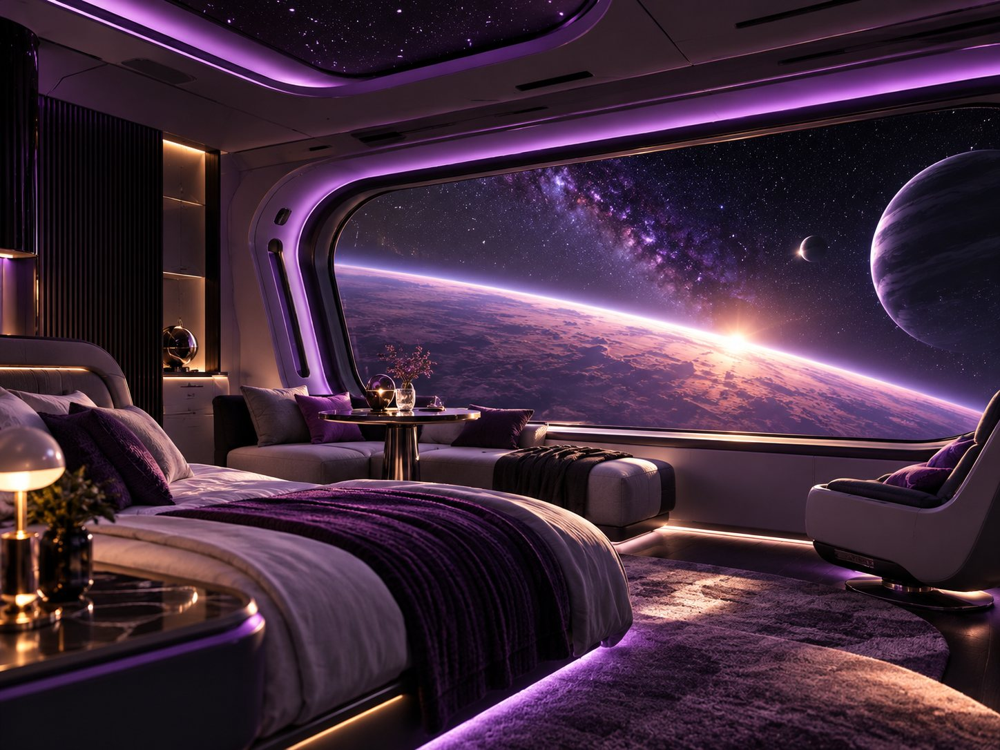
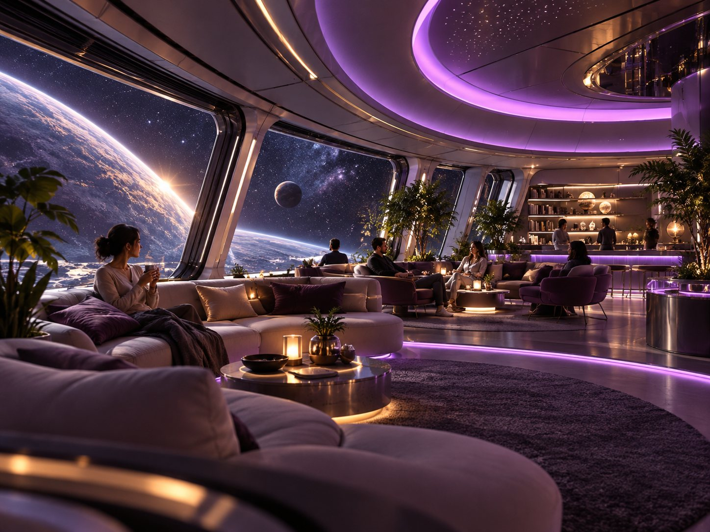

PASSAGE
Space Hitchhiking Terminal.
Already going your way.
A research-informed interplanetary ride-matching experience that helps travellers discover spare human-rated capacity aboard spacecraft already travelling in compatible directions — and turns multiple missions into one understandable journey.

The spacecraft does not come to you.
You join spacecraft already going your way.
Passage reframes space hitchhiking as a journey-planning problem rather than a vehicle marketplace. Travellers enter a destination and departure window; the system assembles complete itineraries from existing mission traffic, spare human-rated capacity and viable transfers.
Interplanetary travel is complex, fragmented, and hard to navigate.
Limited spacecraft
Spacecraft behave more like aircraft and cargo vessels than on-demand cars.
Multi-leg travel
One destination may require several spacecraft and protected transfer windows.
Operational uncertainty
Cargo manifests, schedules, approvals and route changes can invalidate a leg.
Technical complexity
Orbital windows, docking compatibility and remote data freshness should not become the user’s burden.
Users are not looking for a spacecraft.
They are trying to reach a destination.
That changed the product from “browse nearby spacecraft” to “assemble a complete journey from compatible mission traffic.”
Search starts with where and when.
Results are complete itineraries, not craft listings.
If one leg fails, unaffected onward legs are preserved.
From understanding constraints to designing one coherent journey.
Research
Brief analysis
Current space systems
Physics constraints
Research implications
Strategy
Proto-personas
HMW + JTBD
Product rules
Feature prioritisation
Design
Information architecture
User flow
Wireframes
Visual + motion system
Validation
5-second comprehension
Route understanding
Recovery task
Iteration
A fictional 2187 service grounded in real constraints.
Current science is used only as a grounding layer. The case study separates current science, reasonable extrapolation, and fictional assumptions so the concept stays defensible without pretending to predict the future.
NASA Gateway capabilities · nuclear propulsion research · Mars communication delay · Europa Clipper travel scale · Orion human-rated habitat.

Limited assets
Spacecraft are expensive mission vehicles, not personal cars.

Orbital hubs
Transfers happen at gateways, stations and docks.

No magic travel
No FTL, warp or teleportation in the concept.
Freshness matters
Remote information may be minutes old; the UI exposes sync age.

Long-haul trust
Berth, radiation protection and habitability matter on long trips.
2187
Mature lunar/Mars settlements and active Jupiter-system logistics.
Autonomous
Highly automated flight with a licensed human Commander retaining mission authority.
Hub-based
Planetary gateways, local orbital stations, deep-space exchanges and surface ports.
Spare capacity
Traveller pays a Transit Contribution to join a mission that would depart anyway.
Speculative transit model
Lunar Gateway → Mars Gateway: 25–40 days
Mars → Jupiter Gateway: 55–85 days
Jupiter Gateway → Europa: 8–16 hours
These are fictional 2187 design assumptions — not current spacecraft capability.
Primary demo itinerary
Lunar Gateway → Asteria → Mars Gateway → Horizon → Jupiter Gateway → Kepler S8 → Europa Research Colony
Total: approximately 96 days.
Different travellers. A shared need for clarity.
Aarav Mehta
Systems Engineer · Frequent traveller
“Show me the most reliable way there, what I do next, and what changes if something goes wrong.”
- Reliability first
- Needs transfer confidence
- Wants technical detail only when useful
Maya Chen
Documentary researcher · Infrequent traveller
“Tell me where I’m going, what happens at each stop, and whether the connection is still safe.”
- Needs guided recommendations
- Values trust and clarity
- Prefers visual explanation
Dr. Lena Ortiz
Medical researcher · Multi-hop traveller
“Connections are fine. I just need the whole journey to keep working.”
- Accepts multiple rides
- Needs route continuity
- Values recovery intelligence
Research was not decoration. It changed the product model.
We used spaceflight constraints to decide what belongs in the interface and what should remain invisible. The result is a system that feels futuristic without asking the traveller to become an orbital-mechanics expert.
Communication delay → show “Synced 4m ago,” not universal LIVE status.
Human-rated capacity → berth availability matters more than a generic seat count.
Mass constraints → use Mass Allocation rather than airline-style baggage language.
Docking compatibility → a spacecraft can be heading the right way and still be an invalid journey leg.
Multi-week travel → habitability, radiation protection and medical capability become trust signals.
Research translated into six design rules.
The product only keeps information that helps the traveller choose, trust, recover or act.
Preserve confidence.
Not nearby spacecraft first.
Assemble a complete route.
Not just status.
No decorative badges.
Avoid arbitrary match scores.
How might we turn scattered spacecraft mission traffic into understandable complete journeys without exposing unnecessary orbital complexity?
Compare
Direct and multi-leg routes without technical overload.
Trust
Understand spacecraft readiness before requesting a berth.
Recover
Protect the overall itinerary when a single ride changes.
From uncertainty to confidence — then through disruption and recovery.
Destination → recommended route → request → confirmed.
Asteria becomes unavailable after a cargo-manifest change.
Solace replaces only the first leg; onward legs remain protected.
Exploring how to explain a multi-leg journey before styling it.
A cinematic visual language for an advanced transport network.
Plus Jakarta Sans / Inter · Clean · modern · legible at 390 × 844.
Planetary drift · trajectory drawing · spacecraft movement · spatial transitions · route-segment replacement. Motion clarifies relationships instead of decorating screens.
One coherent journey from search to takeoff.
Where to next?
Current · Lunar Gateway
Research Colony · Jovian System
Scanning compatible mission traffic
Existing trajectories · capacity · transfer viability
Recommended
3 spacecraft · 2 transfers
2 spacecraft · ~112 days
3 spacecraft · ~101 days
31d to Mars
64d to Jupiter
11h to Europa
Atlas C90
Cargo / human-rated
We found a replacement first leg.
Departure +19h · Mars arrival +7h
Boarding in 23 min
420 m · 6 min walk
Clearance ✓
Mass verified ✓
Destination is the dominant action; no dashboard clutter.
Trajectory motion replaces a generic loading spinner.
Complete journeys are compared rather than spacecraft.
Three spacecraft read as one understandable itinerary.
Trust, readiness, mass and sync age surface only when needed.
Only the failed leg changes; the itinerary does not restart.
The interface shifts from planning to immediate physical action.
Text is reduced; spatial visuals carry the journey story.
Real spacecraft. Real passenger needs. Extraordinary places to call home.
Spacecraft details are not an engineering catalogue. The interface focuses on what changes the traveller’s decision: mission purpose, available berth, habitability, radiation protection, commander certification, docking compatibility and data freshness.
Asteria
Atlas C90 · Cargo / human-rated

Solace
Helios NX-40 · Replacement passenger craft
Horizon
Odyssey F72 · Deep-space carrier

Kepler S8
Jovian orbital shuttle

Panorama Cabin
Communal HabitatWhen plans change, the journey continues.
Asteria
Lunar Gateway → Mars Gateway
UnavailableSolace
Lunar Gateway → Mars Gateway
Protected1 segment changed
Departure +19h
Mars arrival +7h
Onward connection protected
The system preserves viable onward legs instead of forcing the traveller to rebuild the trip from scratch.
Motion is used to explain space, continuity and change.
Slow layered drift creates depth without blocking usability.
Compatible routes emerge during search and simplify into journey options.
Vehicle motion reinforces route direction and current leg.
Only the failed segment animates out and reconnects.
Validation without pretending the project had a large research study.
Because this was a 3-day speculative assignment, the credible validation layer is task-based and heuristic. The case study should only publish percentages if real testing is actually run.
Can someone explain what Passage does after viewing Home for five seconds?
Can someone correctly describe the Lunar → Europa multi-leg journey?
After Asteria disappears, can the user identify what changed and what stayed protected?
On Transit Pass, can the user identify the immediate physical action?
Speculative design still needs hard constraints.
The most important unit is the journey, not the spacecraft.
Visual route storytelling reduces explanatory text.
The recovery state demonstrates system intelligence better than another happy-path screen.
PASSAGE
Turns fragmented spacecraft availability into one understandable journey.
Same spacecraft. More destinations. A more connected humanity.